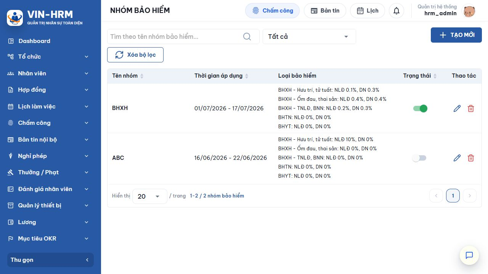
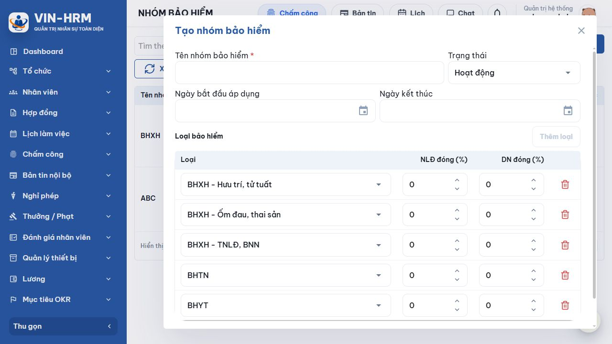

1. Mục đích và phạm vi
Nhóm bảo hiểm là bộ tỷ lệ đóng theo từng thành phần bảo hiểm, có khoảng thời gian áp dụng và trạng thái. Nhóm được gán cho nhân viên; khi tính lương, hệ thống lấy các tỷ lệ của nhóm đang hoạt động và có hiệu lực trong kỳ.
2. Truy cập
Mở Nhân viên → Nhóm bảo hiểm. Màn hình cần quyền quản lý tổ chức.

3. Thành phần trên danh sách
| Thành phần | Ý nghĩa |
|---|---|
| Tìm theo tên nhóm | Lọc nhanh theo một phần tên. |
| Trạng thái | Tất cả, Hoạt động hoặc Ngừng hoạt động. |
| Thời gian áp dụng | Khoảng hiệu lực của bộ tỷ lệ. Thiếu ngày đầu hoặc ngày cuối được hiểu là không giới hạn về phía đó. |
| Loại bảo hiểm | Hiển thị từng loại cùng tỷ lệ NLĐ và DN. |
| Công tắc | Bật hoặc ngừng cả nhóm. |
| Bút chì/Thùng rác | Sửa hoặc xóa bản ghi. |
4. Tạo nhóm bảo hiểm

- Chọn Tạo mới.
- Nhập tên dễ nhận biết, ví dụ theo giai đoạn áp dụng hoặc chính sách.
- Chọn trạng thái và khoảng ngày hiệu lực.
- Kiểm tra từng loại bảo hiểm, nhập tỷ lệ người lao động và doanh nghiệp đóng.
- Xóa dòng không dùng hoặc thêm lại bằng nút Thêm loại; không được trùng loại trong cùng nhóm.
- Chọn Lưu và kiểm tra lại trên danh sách.
| Trường | Quy tắc | Ý nghĩa |
|---|---|---|
| Tên nhóm bảo hiểm | Bắt buộc, tối đa 255 ký tự, duy nhất | Tên của trọn bộ tỷ lệ. |
| Trạng thái | Hoạt động/Ngừng hoạt động | Chỉ nhóm hoạt động mới được gán mới và được bộ tính lương sử dụng. |
| Ngày bắt đầu áp dụng | Không bắt buộc | Ngày đầu bộ tỷ lệ có hiệu lực. Bỏ trống nghĩa là không giới hạn từ trước. |
| Ngày kết thúc | Không bắt buộc; không trước ngày bắt đầu | Ngày cuối còn hiệu lực. Bỏ trống nghĩa là chưa xác định ngày kết thúc. |
| NLĐ đóng (%) | Từ 0 đến 100 | Phần tỷ lệ khấu trừ thuộc người lao động. |
| DN đóng (%) | Từ 0 đến 100 | Phần tỷ lệ doanh nghiệp chịu. |
Ý nghĩa từng loại bảo hiểm
| Lựa chọn | Ý nghĩa sử dụng |
|---|---|
| BHXH – Hưu trí, tử tuất | Tách riêng tỷ lệ dành cho quỹ hưu trí và tử tuất. |
| BHXH – Ốm đau, thai sản | Tách riêng tỷ lệ dành cho chế độ ốm đau và thai sản. |
| BHXH – TNLĐ, BNN | Tỷ lệ cho tai nạn lao động và bệnh nghề nghiệp. |
| BHTN | Bảo hiểm thất nghiệp. |
| BHYT | Bảo hiểm y tế. |
| Không sao chép tỷ lệ từ dữ liệu minh họa Tỷ lệ trên ảnh là dữ liệu của môi trường chạy thử, không phải khuyến nghị pháp lý. Hãy nhập theo quy định hiện hành và chính sách đã được phê duyệt của doanh nghiệp. |
5. Quy tắc hiệu lực và chống trùng
- Mỗi nhóm phải có ít nhất một loại bảo hiểm.
- Mỗi loại chỉ xuất hiện một lần trong cùng nhóm.
- Tỷ lệ mỗi bên phải trong khoảng 0–100.
- Hai nhóm đang hoạt động không được có khoảng ngày áp dụng giao nhau. Muốn tạo bộ tỷ lệ kế tiếp, hãy chốt ngày kết thúc nhóm cũ hoặc ngừng nhóm cũ trước.
6. Gán cho nhân viên và sử dụng khi tính lương
Vào hồ sơ nhân viên, phần Bảo hiểm, chọn nhóm và nhập khoảng thời gian nhân viên tham gia. Nhóm ngừng hoạt động không thể gán mới. Một nhân viên không được có hai khoảng gán bảo hiểm chồng lấn.
Khi chạy lương, một loại tỷ lệ chỉ được lấy nếu đồng thời thỏa ba điều kiện: nhóm đang hoạt động; khoảng hiệu lực của nhóm giao với kỳ lương; và khoảng gán của nhân viên cũng giao với kỳ lương. Hệ thống dùng cột NLĐ đóng và DN đóng cho hai phần tương ứng.
| Cấu hình liên quan Không có khóa riêng tại Hệ thống → Cấu hình điều khiển trực tiếp nhóm bảo hiểm. Các tỷ lệ, trạng thái và ngày hiệu lực tại đây là cấu hình chính; phụ cấp có cờ Tính bảo hiểm cũng tham gia vào căn cứ bảo hiểm của nhân viên. |
7. Sửa, ngừng áp dụng và xóa
- Chọn bút chì để sửa tên, thời gian, tỷ lệ hoặc trạng thái.
- Nếu chuẩn bị áp dụng bộ tỷ lệ mới, kết thúc hiệu lực nhóm cũ trước để không trùng khoảng ngày.
- Dùng công tắc để ngừng áp dụng nhưng vẫn giữ lịch sử.
- Chỉ xóa nhóm chưa từng được gán; hệ thống chặn xóa nhóm đã gán cho nhân viên.
8. Lỗi thường gặp
| Thông báo | Cách xử lý |
|---|---|
| Khoảng ngày áp dụng ... bị trùng | Kiểm tra nhóm hoạt động khác; sửa ngày hoặc ngừng nhóm cũ. |
| Nhóm phải có ít nhất một loại | Thêm tối thiểu một dòng loại bảo hiểm. |
| Không được chọn trùng loại | Giữ một dòng cho mỗi loại. |
| Tỷ lệ phải từ 0 đến 100 | Nhập lại số phần trăm hợp lệ. |
| Không thể xóa nhóm đã được gán | Ngừng hoạt động hoặc gỡ gán khỏi hồ sơ phù hợp; không xóa dữ liệu lịch sử. |
9. Danh sách kiểm tra
- Tên nhóm mô tả đúng giai đoạn.
- Ngày hiệu lực không trùng.
- Đủ các loại cần thiết.
- Tỷ lệ NLĐ/DN đã được duyệt.
- Đã gán thử cho nhân viên.
- Đã đối chiếu bảng lương thử.